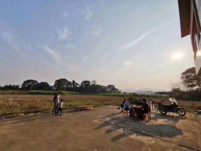

How 2019 Wuhan Epidemic Affects My Life
Karobben
24 Feb 2020
I am the most who are willing to stay at home, rather than go outside, go social, etc. As a result, the latest Epidemic has not affected me at all.
But, of course, it does affect me, indirectly.
Spring Festival
As a Chinese, the lunar year, or Spring Festival, is the most important day for me. Most of us will spend joy time with my family.
I still remember the previous days I crossing the year with my parents. I was too young to stay clear for that long. So, my parents would
wake me up at like 11:50pm to crossing the "old year" and enjoying the scenery that all people launch their fireworks at 12:00 am to brightening
the sky, blessing the new year. After I grew up, I have a new tradition -- crossing the year with my friend made in middle school. We have
done so many years and had lots of fun. We made the plan for new years party and it was canceled, of course.
At the end of this year, my family and my uncle's family gathered before the TV to watch the show. Ad I was
installing a new system, Deepin 15.11, which has a very beautiful desktop environment, but, you know, poor software circle and a few bugs.
I remember that I started to make the R 3.6.0 from the source code in the lunar year 2019, it was still making in 2020, and it ended up with an error.
Ha, that's funny.

My Blog
After that, I was still staying at home, with my family. I am feeling pretty good. I was processing a group of commercial data. I am trying
to write a word or ppt report. But, as you know, it is luxurious for the linux platform. I had a terrible experience with Lib office, and so, I tried
WPS and it was keeping craps. As I got advice from a QQ group, I started to try to write my report as an Html file. I got huge confidence and
felt lots of self-achievement from this project. So soon, I decided to re-start my blog, GitHub Page, on 20th Jan. At the same time, I noticed
another online notes tool, Yuque Notes. So, I started to upload all of my notes online.
Edge of Broken
As with the days running, I still feeling good and preparing for GRE, updating my blog, writing some scripts and post some videos.
But my family, especially my mom, fell into anxious and anxious. She was walking in and out between her bedroom and living room frequently,
quarreling about the Epidemic, making phone calls to all the people she can in the contact list, singing songs very loudly.
It makes me feel a little bit annoying.
About 12nd February, my mon was leaving and go to her home town to live at my uncle's home, her second old brother.
My father decided to stay to accompany me. I still feeling everything is normal except I have to postpone the examination day.
But it is okay, cause I can have more time to prepare for it.
A Bad Decision
On 22nd, Feb., I made a very terrible decision--to go home town with my Dad. He thought it might good for my physical and psychological since I spend such a long time to stay at home, my little bedroom. After we were arrived at my uncle's house, you know, like all house in village, the scenery is beautiful, the farmland filled with followers, the tranquil river runs slowly, the brize bring you with fresh smells of grass buds, the scared birds yelling and flapping their wings, the mosses covered on the adobes beside the pond, and welcome to the spring! But those things were not enough to lighten me up or smooth my heart. I was still filling stress and worry about how should I spend the next 3 days. Firstly, there hadn't a table for me to place my laptop. I can't use my laptop to studying or working. Secondly, we have a huge different recipe. I have less fatty and salty dietary. But they are really enjoying the food with lots of oil and salt and flavored with heavy spicy. So, it is easy for me to have diarrhea if I eat them too much. Finally, the poor hygiene condition. Be honest, I do not really care about this problem too much since I was living at the place for days or even months where had worse hygiene condition than here. Usually, I was got 30 to 50 bug's bite if I spend a night at her house. On the other hand, the restroom is the worst place where I don't want even to mention. Because they are still keeping the tradition of collecting the urine to fertilizing the crops. So, the restroom is really smelling. But I still chose to come with my Dad... What the heck me??? I must break my brain to make that decision.

But I have to admit that this scenery is beautiful and I love it. You know, Running in the intricate road on the farmland with my little nephew, breathing the familiar
smelling from the river, smelling the green leaves and followers on the farm, touching the soft green moss beside the pond, seeking and shacking the biggest bamboo
in front of my grandfather's house, searching bugs from the grass, listening the birds crying and flapping wings, sitting and watching my parents playing the cards,
and enjoying the beautiful sunset are the life of so many of people dreaming about. But I can't fully unravel myself to enjoying those. I still don't have a job, and I am preparing
for the TOEFL and GRE exams. I want to keep myself busy and this is the only way to make me feeling serenity at present. I tried to open my laptop and worked for a while, but soon,
my neck was killing me and warning me to have a break. So, I have to close it and go outside to watching the sky and stay numb.
Rescue
Luckily, one of my cousins was coming back. Because of the epidemic, my other older brother decided to drive him home and go back at the day since exposing in public is not a wise choice. That means I got a chance to escape from here immediately. So, I am felling batter now. Cousin is working and I stay at home to study and updating this page. I might update more in the future to record the 2010 Wuhan epidemic's effect on me, on my family.